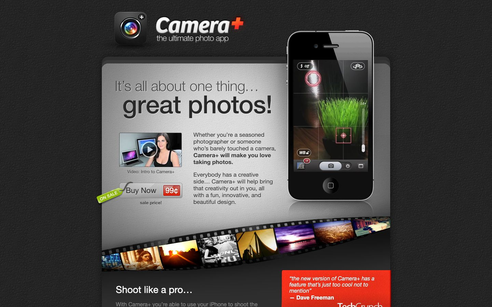

References / Website / 137
Camera+ website, 2012
The site for tap tap tap’s iPhone camera app, archived January 2012: a dark leather-grain page with a gray card, a film strip, and a price tag on a string.
- Source
- campl.us (archived copy)
- Creator
- tap tap tap
- Made
- 2012
- Style
- Skeuomorphism (agent-proposed, not yet reviewed by a person)
- Moods
- Tactile, glossy, photographic
- Evidence
- Captured from the Internet Archive with
tools/capture.mjs(headless Chrome, 1440 × 900) on 28 September 2026 and inspected. The archived page may lack some images or scripts that the live page had. - Reviewed
- Rights
- Third-party work, stored with credit for commentary. License: unverified. Rights policy
Observed
- The page background is a very dark gray with a fine pebbled grain like leather.
- A large gray card with a paper-like grain and a soft top-lit gradient holds the headline “It’s all about one thing… great photos!” in dark gray with a light lower edge.
- A strip of film with sprocket holes curves across the bottom of the card, carrying sample photos.
- A green “On sale” tag hangs on a string from a beveled gray “Buy Now” button with a red “99¢” label.
- The app icon is a photoreal camera lens in a dark rounded square; an iPhone 4 with a reflection shows the camera screen.
Why it belongs
It passes the gradient, shadow, and radius metrics (vertical gradients on 15% of boxes, shadows on 82%), but color and surface pattern shares are 0. The measurement sees none of the texture, because the page draws it with bitmap background images; see the style synthesis.
Borrow
Hang a small tag on a string from a buy button for a sale price.
Use a curved film strip as a carousel frame for photos.
Measured
Machine-extracted by tools/extract-traits.js on . Full measurement.
- Type families
- Helvetica Neue (100%)
- Type scale ratio
- 1.14
- Median radius
- 0 px
- Mean chroma
- 0.04
- Palette
- #ffffff 34%
- #a8a8a8 20%
- #131313 18%
- #808080 8%
- #2e2d30 5%
- #eeeeee 5%
- #fb3a24 4%
- #000000 4%

